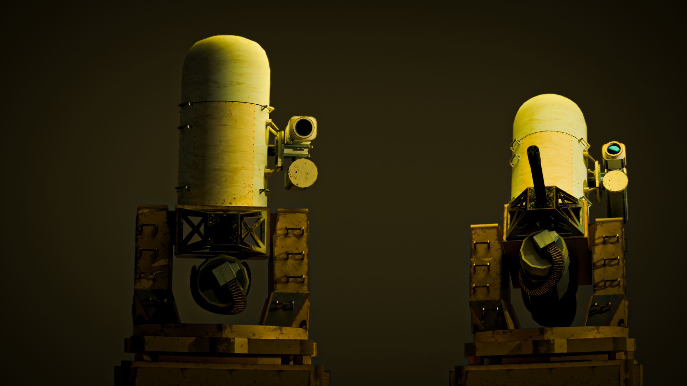
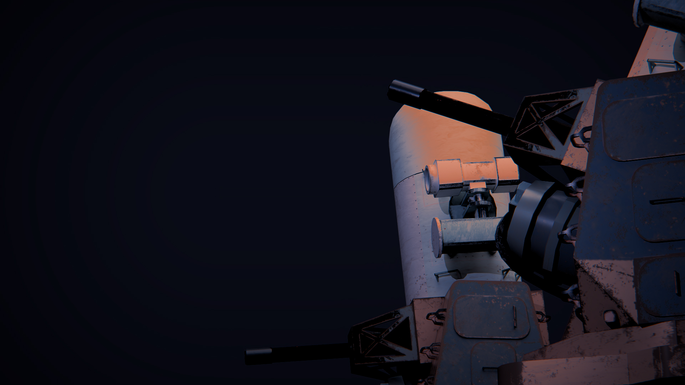
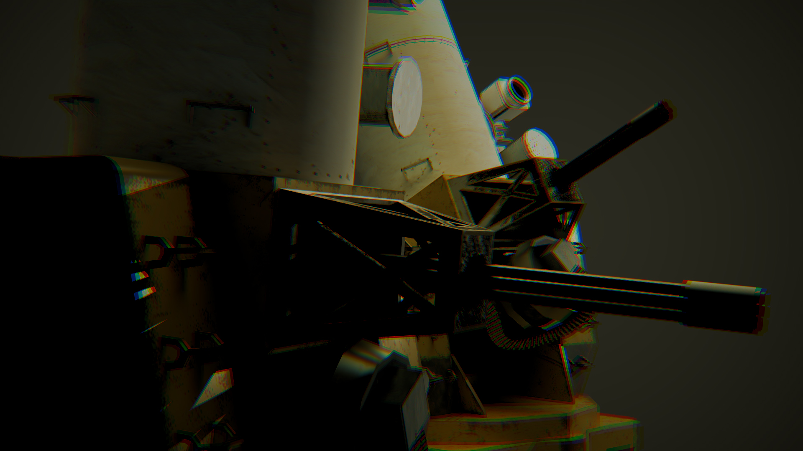

C-RAM Air Defence System





The Project
A C-RAM (Counter Rocket, Artillery, Mortar) air defence simulation in Unity 6, built as a modular framework for military systems rather than as a game. An autonomous radar-guided autocannon acquires, tracks, leads and intercepts incoming drone swarms. The architectural goal was that new behaviour — a formation, an ammunition type, a targeting doctrine — should require a new asset and at most an additive class, never an edit to an existing file. Personal project.
Assembly Architecture
Nine assembly definitions with a strictly one-directional dependency graph: Shared → nothing, Data → Shared, and each system referencing only Shared and Data.
CramDemo.CRAM has no reference to CramDemo.Drone, so the fire control code cannot name DroneController — targeting runs entirely through an ITargetable contract exposing position, velocity and liveness. Accidental coupling between systems produces a compile error rather than a code review comment.
CramDemo.Camera uses root namespace CramDemo.CameraSystem; a namespace named Camera shadows UnityEngine.Camera for every file inside it.
Generic Systems
StateMachine<T> where T : class, IState — pure C# with no UnityEngine reference, unit-testable in isolation, and constrained to a per-FSM abstract base so droneMachine.TransitionTo(gunState) fails to compile. Three FSMs run on it; the CRAM runs two concurrently, since the carriage can traverse while the barrel holds fire. The class constraint keeps state identity reference-based rather than value-based.
Rejected an earlier tutorial-derived FSM that polled
GetNextState() on the current state each frame — that design is self-driving only, and an external command would have survived exactly one frame. Transition policy belongs to the caller, which is what lets one machine serve both an autonomous drone and an externally commanded gun with no mode flag.
ObjectPool<T> where T : Component — Component rather than MonoBehaviour as the loosest constraint providing gameObject. Queue-backed rather than stack-backed, so a returned instance gets maximum time before reuse. Logs an error and returns null on exhaustion rather than growing; exhaustion is made unreachable at authoring time by clamping swarm size to pool size in OnValidate. Serves drones, projectiles, AudioSources and VFX instances.
Data Layer
Authored values live on ScriptableObjects and are never written at runtime; mutable state lives in plain-C# context objects seeded from the config on
Formations and target-priority algorithms are abstract ScriptableObjects rather than enums. Added
Start. Config holds the starting value, context holds the current one.
CramSettings is the exception that proves the rule — a ScriptableObject both the UI and CRAM assemblies hold, allowing runtime control across an assembly boundary neither side can cross. None of its runtime fields are [SerializeField]: in the Unity editor, writing to a serialised ScriptableObject field at runtime persists to disk, silently mutating authored tuning data and committing it. Verified by moving every runtime control, exiting play mode and confirming no .asset shows as modified.
Formations and target-priority algorithms are abstract ScriptableObjects rather than enums. Added
VFormation and DiamondFormation three weeks after SwarmSpawner<T> was written, with zero changes to the spawner.
Swarm & Pooling
SwarmSpawner<T> where T : Component, ISpawnable — two constraints for two distinct permissions. DroneSpawner is a one-line subclass with an empty body. Formations return local-space offsets, so TransformPoint handles world placement and orientation for every formation implementation.
Solved a multi-spawner cross-talk bug where running two spawners produced "pool empty" errors and double-return warnings — the static
GameEvents bus meant every spawner received every drone's death event and attempted to reclaim instances it did not own. Fixed with a HashSet<T> ownership check gating the return.
Fire Control
GunMovementFSM and GunCombatFSM are commanded by an Orchestrator through intent-level methods (TrackTarget, StandDown, OpenFire, HoldFire); state instances stay private and the Orchestrator never learns that Aiming or Engaging exist. Readiness is polled (IsLocked, IsOutOfAmmo) rather than evented — same assembly, direct reference, and static events would cross-talk between multiple emplacements.
Cut a
Locked state entirely: being locked is not a mode the gun occupies but a fact about current aim error, so IsLocked is a computed property with no backing field and no transition to manage. Cut a Reloading state after researching the real system — C-RAM fires continuous bursts and the pause between them is the slew, which the movement FSM already models. Bursts became emergent and matched the real 100–150 rounds-per-target figure.
The target registry is fed by
OnTargetEnabled / OnTargetIntercepted / OnTargetLeaked rather than physics sweeps, so range filtering is arithmetic over a list already held — no OverlapSphere, no per-frame allocation. The candidate list is a reused field cleared each selection rather than reallocated.
Target commitment follows real kill-assessment doctrine: the gun holds a target until it is dead, which eliminates thrashing and reduces full filter-and-sort to target-loss events rather than every frame.
Solved a fire rate running 20% slow — measured 59.6 rounds/sec against a configured 75. The inter-round timer decrement sat inside an
else if, so the tick that fired never advanced the clock, wasting one frame per round. Fixed by moving the decrement outside the branch and accumulating with += rather than = to preserve overshoot. Verified at 1,550 rounds in 21s against a theoretical 20.7s.
Ballistics & Collision Detection
Projectiles carry no colliders or Rigidbodies. Each round performs a
Solved projectile tunnelling. Physics samples at a fixed 0.02s timestep, so a 300 m/s round advances 6m per step and never overlaps a 1m drone at any sampled instant. A hairline raycast tests where the target was; the sphere radius absorbs sub-frame target movement. The radius is taken from
Physics.SphereCast in FixedUpdate across speed × fixedDeltaTime, using a layer mask, casting before translating.
Solved projectile tunnelling. Physics samples at a fixed 0.02s timestep, so a 300 m/s round advances 6m per step and never overlaps a 1m drone at any sampled instant. A hairline raycast tests where the target was; the sphere radius absorbs sub-frame target movement. The radius is taken from
RoundData and doubles as the round's lethal radius, making APDS, HE and flak three assets with no code. Governing relationship: max engageable target speed = hitRadius ÷ fixedDeltaTime.
ProjectilePool holds a Dictionary<GameObject, ObjectPool<Projectile>> keyed on the prefab rather than the round asset, so two rounds sharing a prefab share a pool. Sub-pools are created lazily on first fire and sized per round as fireRate × (MaxRange ÷ ProjectileSpeed) × headroom, allowing mid-run ammunition swaps.
Lead Targeting
Replaced a first-order approximation that systematically over-led. The original computed
Replaced with a closed-form solution. The round travels s·t and the target reaches P + V·t; squaring |P + V·t| = s·t yields a quadratic whose coefficients are built from dot products of relative position and velocity:
Origin is the pitch pivot, not the yaw base: a 4.4-unit height offset introduces a systematic atan(4.4 / range) bias, roughly 2.5° at 100 units, exceeding lock tolerance.
time = distance(target, muzzle) / projectileSpeed, measuring to the target's current position while the round actually flies to the intercept — a shorter journey for a closing target.
Replaced with a closed-form solution. The round travels s·t and the target reaches P + V·t; squaring |P + V·t| = s·t yields a quadratic whose coefficients are built from dot products of relative position and velocity:
(V·V − s²)t² + 2(P·V)t + (P·P) = 0
Returns Vector3? — a negative discriminant means the round cannot catch the target, which is a real answer the iterative approach could not produce. Order is load-bearing: discriminant tested before Mathf.Sqrt (a NaN would silently poison the aim with no error), a degenerate case guarded when |a| approaches zero, and the smallest strictly positive root selected — Mathf.Min is wrong here, because a faster projectile makes a negative and one root always negative.
Origin is the pitch pivot, not the yaw base: a 4.4-unit height offset introduces a systematic atan(4.4 / range) bias, roughly 2.5° at 100 units, exceeding lock tolerance.
Runtime Tuning
Lock tolerance is derived rather than authored:
A minimum tracking range falls out of the same relationship at roughly 107 units for these values — targets crossing closer outrun the traverse regardless of tolerance, mirroring the real system's minimum engagement range.
Solved a 60 Hz state machine thrash surfacing as a buzzing audio artifact. The Orchestrator commanded
Min( Max(yawSpeed, pitchSpeed) × Time.deltaTime × factor, maxTolerance )
Mathf.MoveTowardsAngle does not overshoot, so residual aim error is caused by target motion during traverse, not by step size. For any trackable target the angular rate is bounded by traverse speed, making one frame of traverse a sufficient bound — which means a traverse slider cannot push the gun into a state where it never locks. The cap exists because that bound governs reachability, not accuracy; miss distance is range × tan(tolerance).
A minimum tracking range falls out of the same relationship at roughly 107 units for these values — targets crossing closer outrun the traverse regardless of tolerance, mirroring the real system's minimum engagement range.
Solved a 60 Hz state machine thrash surfacing as a buzzing audio artifact. The Orchestrator commanded
OpenFire() every frame regardless of ammunition, so the combat FSM entered and exited Engaging once per frame, restarting the firing loop clip from sample zero. Fixed with an IsOutOfAmmo computed property polled by the Orchestrator, which stands down instead of commanding a dry gun.
Presentation
Audio ownership splits three ways by lifetime: the gun's firing loop on a single manager-held source driven by state-entry events rather than per-round, explosions through
ObjectPool<AudioSource>, and drone engine noise on the drone prefab itself so it tracks position with no per-frame copying. Round self-destruct pops use a separate pool so a constant cosmetic sound can never starve a kill sound. Doppler disabled — at simulation speeds the shift is roughly 8×.
CameraManager cycles a List<Camera> on a single serialized InputAction, making the binding authored data; adding a camera requires no code. The flythrough camera flies the drones' route rather than following a drone, since a followed target dies within seconds.
OnRoundExpired(Vector3, float) carries the round's lethal radius in the payload, allowing the VFX assembly — which references Shared only — to size a burst from the round that produced it without referencing the data layer. Empty effect pools fail silently while an empty drone pool logs loudly: a missing effect is cosmetic, an unavailable drone means a simulation guarantee has broken.
Art
All models and textures produced in Blender and Substance Painter. Blender origins imported unusable, so the scene uses empties as logical transforms with meshes as offset children — code only ever touches the empties, making the model re-exportable without any code change.